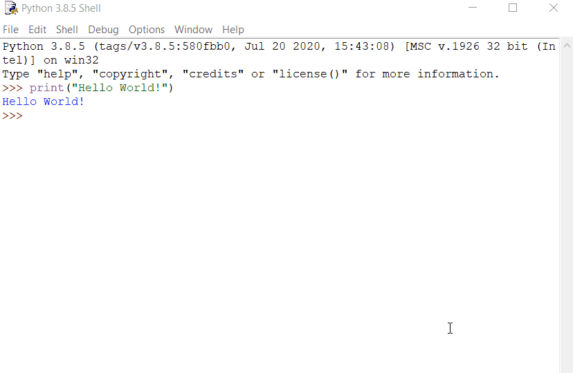
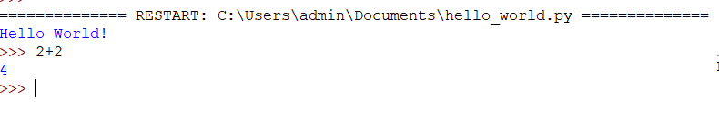
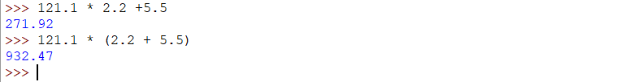
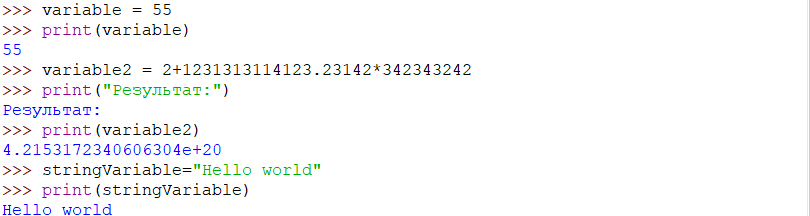
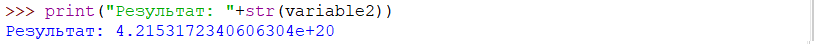
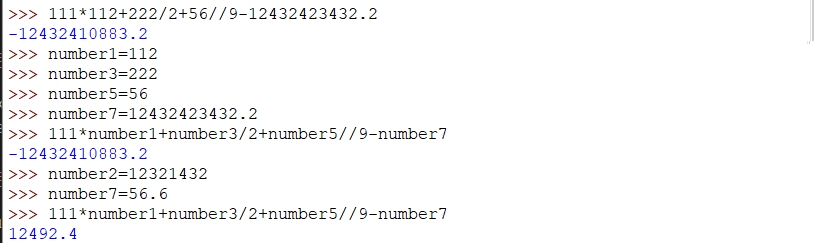

На зорі ери персональних комп'ютерів (ПК) все було просто. До багатьох ПК була вбудована мова
програмування BASIC. Нічого не було потрібно встановлювати - достатньо було включити комп'ютер.
На екрані з'являлося повідомлення READY ( «Готовий»), і можна було починати вводити прості
програми (а «basic» дослівно і означає «простий», «базовий»). Круто, правда? Втім, крім цього
напису READY нічого більше і не було. Ніяких програм, ніяких діалогових вікон, ніяких меню. Щоб
комп'ютер зробив хоч що-небудь, потрібно було писати власну програму! Не існувало ні текстових
редакторів, ні медіаплеєрів, ні веб-браузерів, нічого, до чого ми так звикли сьогодні. Не було
навіть Інтернету, в якому можна було б щось знайти. Не було красивої графіки, не було і
звукового супроводу, крім рідкісного біпа в разі помилки.
Сьогодні ж,у нас є велика різноманітність програм і мов програмування,які дозволяють нам легко і
без зайвих страждань написати щось.
Мова програмування Python була створена в 1990 році голандцем Гвідо ван Россумом.
Своє ім'я - Python (Пайтон) - отримав від назви телесеріалу (“Monty Python”), а не плазуна.
Після того, як Россум розробив мову, він виклав її в Інтернет, де вже ціле співтовариство
програмістів приєдналося до її поліпшення. Python активно вдосконалюється і в даний час. Часто
виходять його нові версії. Офіційний сайт http://python.org.
З появою версії 3.0 розвиток Python як би пішов в двох напрямках: одночасно розвиваються і 2-га
і 3-я версії Python.
Python – багатоцільова мова програмування, яка дозволяє писати код, що добре читається.
Відносний лаконізм мови Python дозволяє створити програму, яка буде набагато коротше свого
аналога, написаного на іншій мові.
Які ж її переваги спитаєте ви? Це:
Багатоплатформовеність.Програми на Python можна запускати
в різних операційних системах без будь-яких змін
стандартна бібліотека, яка встановлюється разом з Python і
містить готові інструменти для роботи з операційною системою, веб-сторінками, базами даних,
різними форматами даних, для побудови графічного інтерфейсу програм тощо
Програми, написані на мові програмування Python, можуть бути як невеликими скриптами, так і
складними системами з кількістю стрічок коду більше ніж в усіх книжках про Гаррі Поттера
разом узятих.
Python абсолютно безкоштовний
На жаль, ця мова програмування, як і будь-яка інша, має також і недоліки. Найбільшим з них є
швидкість виконання програм(.Оскільки Python є інтерпритованою мовою програмуавння,це значить що код
спочатку компілюється у внутрішній байт-код, який потім виконується інтерпретатором Python. У
більшості випадків при використанні Python виходять програми повільніші в порівнянні з такими
мовами, як наприклад C.
Тим не менш Python використовували при написанні купи програм і веб сайтів, до прикладу можна
віднести:
World of Tanks .
Вільна енциклопедія Вікіпедія .
Пошукова система Google .
DropBox – файловий хостинг, що включає персональне хмарне сховище, синхронізацію файлів і
програму-клієнт.
На жаль, мова Python не встановлена на комп'ютер наперед і її доводиться докачувати окремо.
Для цього необіхдно відкрити браузер і перейти за адресою http://www.python.org/downloads
і завантажити останню версію програми-установника Python 3. Неважливо, яку конкретно версію Python
ви завантажите. Головне, щоб її номер починався з цифри 3.
Далі необхідно запустити файл,що ви скачали. Не забудьте покласти галочку біля update PATH.Це
спростить подальшу роботу. Установка інтерпритатора Python може зайняти трохи часу.
Установка інтерпритатора Python може зайняти трохи часу.
Ми встановили Python собі на комп'ютер. Як тепер написати свою першу програму? В чому її писати?
Може для цього треба створити документ у Word чи Powepoint? А може треба просто продиктувати
комп'ютеру що ми хочемо зробити і сказати "Python виконуй"?
Що ж. Для того щоб писати код використовують спеціальні програми під назвою "Середовище
програмування"(IDE). Перевагою Python є те що,разом з інтерпретатором встановлюється також таке
середовище. Воно називається IDLE. Для того щоб його запустити, необхідно меню "Пуск" і почати
вводити IDLE.
Якщо вас не влаштовує/не подобається стандартна програма - завжди можна завантажити іншу,наприклад
PyCharm.(Завантажити можна тут https://www.jetbrains.com/ru-ru/pycharm/)
Будь-який програміст завжди пам'ятає свою першу програму. У всіх програмістів вона однакова.
Це вивід привітання "Привіт світ"(Англійською "Hello world"). Як же нам написати її на
пайтоні? Для цього нам необхідно вивчити команду print. Вона дозволяє вивести(надрукувати)
щось в консоль. Для того щоб привітатись зі світом необхідно написати print("Hello World!")
Якщо вам дуже сподобалась ваша програма,або ви її довго писали чи ще не дописали, але не хочете
втратити прогрес, її можна зберегти у спеціальний файлик. Для цього необхідно натиснути на кпопку
File і далі Save as.
Будь-який програміст завжди пам'ятає свою
першу програму. У всіх програмістів вона
однакова.
Це вивід привітання "Привіт світ"(Англійською "Hello world"). Як же нам написати її на
пайтоні? Для цього нам необхідно вивчити команду print. Вона дозволяє вивести(надрукувати)
щось в консоль. Для того щоб привітатись зі світом необхідно написати print("Hello World!")

Тепер ми можемо запустити наш файл,для цього необхідно знову натиснути на кнопку File,далі
Open.Вибрати місце де ми зберегли наш файл. Після того як ми його вибрали,у нас відкриється нове
вікно. В ньому нам необхідно знайти кнопку Run і натиснути Run module. Файл виконається. Результат
ви зможете побачити в першій консолі.
Спробуймо використати пайтон для написання чогось серйознішого. Наприклад поразувати якийсь
математичний вираз. Для цього достатньо просто ввести його у середовище програмування.
Спробуймо порахувати 2+2. для цього нам просто треба ввести у консоль 2+2

Дії що ми можемо виконувати над числами називаються операторами.
В мові пайтон існують наступні оператори:
+ - операція додавання (1+1=2)
- - операція віднімання (100-10=90)
* - множення (5*25=125)
/ - ділення (121 /11 = 11)
** - піднесення до степеня (3**2=9)
% - повернення остачі від ділення (100%3=1)
// - отримання тільки цілої частини від результату (100//3=33 а не 33.33)
Порядок виконання операторів такий самий як і у звичайних математичних операцій. Для того щоб його
змінити можна використовувати дужки.

Зверніть також увагу що в пайтоні дійсні числа записуються не через кому,а через крапку( 121.1 а не
121,1)
Уявімо що ми хочемо зберегти результат якоїсь математичної операції чи число для майбутнього.
Для цього нам потрібно використати таку штуку як змінна.Вона чимсь схожа на файлик, тільки файлик
може зберігати текст,зображення а наша змінна якийсь надпис чи число. Оголосимо змінну variable і
присвоїмо їй якесь значення,наприклад 55. Для цього нам необхідно написати variable=55
Змінні також можна друкувати за допомогою стандартної функції print.Це дозволяє нам взнати яке ж
значення змінна могла отримати

Для того щоб вивести одночасно і якийсь текст і число використовують команду str().

Яка ж перевага зі змінних? Уявіть що викладач сказав вам порахувати щось на зразок
111*112+222/2+56//9-12432423432.2 . Ви довго і старанно мучались щоб це набрати а потім викладач
каже замінити 2 і 5 число на 12321432 і 56.6. Доведеться набирати все спочатку(. Ми могли б зберегти
частину значень у змінні тоді для обчислення виразу нам достатньо було б змінити лише значення самої
змінної. Це б виглядало якось так:

Так,зараз переваги від такого виразу зі змінними в нас не дуже багато,але в наступних уроках ми
побачимо усіі плюси таких записів)